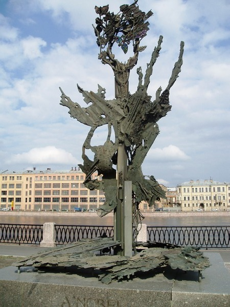

Dia lahir dari ayah Immanuel Nobel yang juga seorang penemu dan insinyur dan juga telah bereksperimen dengan cara yang berbeda dari peledakan batu. Ayahnya menemukan kayu lapis modern dan telah bekerja pada pembuatan torpedo.Ayahnya juga membangun jembatan, bangunan, dan mengadakan percobaan dengan bermacam cara dalam peledakan batu.Nah dari ayahnya ini Alfred Nobel juga mengikuti jejak sang ayah, karena sang ayah memaksa,ayahnya menginginkannya mengikuti jejaknya dan tak menghargai bakat Alfred dalam puisi. meskipun begitu, Alfred sangat tertarik di bidang bahasa, kimia, dan fisika, sehingga ayahnya memutuskan mengirim putranya ke luar negeri untuk belajar dan menjadi insinyur kimia.
Dia memiliki 8 saudara & anak ketiga dari orang tuanya, namun hanya Alfred dan 3 saudara-saudaranya yang selamat dari masa kecil mereka.
Alfred Nobel adalah keturunan dari ilmuwan & penulis Swedia yang terkenal - Olaus Rudbeck.
Ini kejutan besar,orang yang namanya ada di dalam penghargaan terbesar zaman sekarang, tidak pernah sekolah SMP dan SMA di sekolah formal, namun dia diajar secara pribadi oleh guru terkenal Fisika, Kimia, Matematika dan sastra pada waktu itu. Keluarga Nobel menetap di Saint Petersburg dan hidup sederhana walaupun sebenarnya dapat berkecimpung dalam kemewahan. Immanuel menginvestasikan kekayaannya pada pendidikan anak-anaknya. Alfred dan semua saudaranya tidak menjalani pendidikan formal di sekolah tetapi mereka menjalani pendidikan privat di dalam rumah di bawah didikan guru-guru yang berkompeten di bidangnya masing-masing.
Dia pindah ke Saint Petersburg, Rusia bersama dengan keluarganya pada tahun 1837 karena bisnis ayahnya yang bangkrut di Stockholm.Tahun 1842 keluarga Immanuel Nobel berkumpul kembali di Rusia. Bisnis Immanuel yang baru, yaitu bidang mesin sedang naik daun dan sukses karena adanya kontrak dengan militer Rusia sebagai penyedia peralatan-peralatan yang digunakan dalam Perang Krim melawan Inggris. Perusahaannya juga membuat ranjau darat dan laut yang diperlukan untuk pemerintah Rusia.
Ketika Alfred Nobel bertemu penemu Nitroglycerin- Ascanio Sobrero di Paris, ia memperingatkan dia untuk menggunakan nitrogliserin, dan setelah itu Alfred menjadi lebih tertarik untuk membuat nitrogliserin yang lebih aman dan dapat digunakan.
Dia telah memiliki 355 paten di seluruh dunia dan paten pertamanya adalah untuk Gas meter (Paten Inggris) pada tahun 1857.
Ketika ia mencampur Nitrogliserin dengan zat penyerap lembam pada 1867, suatu hal yang baru diciptakan, ya, Dynamite. Dan pada tahun 1875, ia menemukan gelignite, yang lebih kuat dari Dynamite.
cinta keduanya adalah Bertha Kinsky (Austro-Bohemian Countess) yang juga menjadi sekretarisnya pada tahun 1876. Dikatakan bahwa dia berada di balik masuknya Penghargaan Perdamaian di antara penghargaan lainnya yang dia buat. Dia juga memenangkan Hadiah Nobel Perdamaian pada tahun 1905.
Ketika kakaknya, Ludvig Nobel meninggal pada tahun 1888, sebagian besar surat kabar menyebutkan nama Alfred dalam berita kematian mereka, sebuah kesalahan besar.
Pada tanggal 27 November 1895, ia menandatangani wasiat terakhirnya di mana ia menyisihkan 94% dari total kekayaanya(setara dengan 31.225.000 Kronor Swedia)untuk menetapkan 5 Hadiah Nobel. Hadiah yang akan diberikan ke lima bidang, kepada orang-orang terhormat dari negara mana pun di dunia. Dan setelah kematiannya lima tahun kemudian, hadiah Nobel pertama disajikan dalam lima kategori - Fisika, kimia, ilmu kedokteran, melek huruf, dan yang terakhir untuk orang yang dekat dengan masyarakat.
Pada tanggal 10 Desember tahun 1896, Alfred Nobel terkena stroke jantung dan meninggal di Sanremo, Italia.Dia dimakamkan di Norra Begravningsplatsen (Pemakaman Utara) Stockholm dan meninggalkan sebuah wasiat dalam wasiatnya, Nobel tidak menunjuk siapa pun sebagai penerima wasiat dan tak berkonsultasi dengan berbagai lembaga yang telah ditugaskan untuk memberikan penghargaan itu.
Monumen untuk Alfred Nobel didirikan pada tahun 1991 Monumen untuk Alfred Nobel didirikan pada tahun 1991 di Saint Petersburg dan terletak di pinggir sungai Bolshaya Nevak di Petrogradskaya Embankment.
